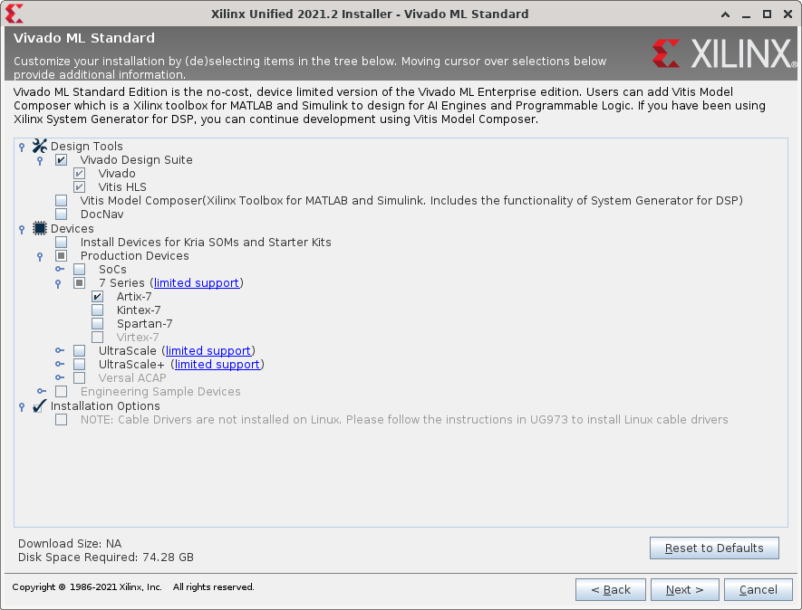
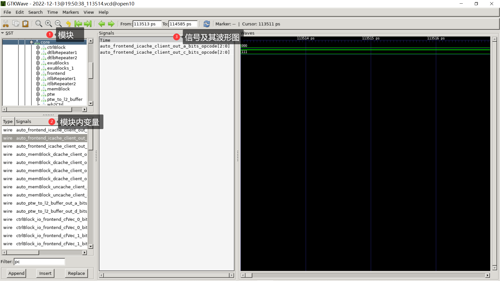
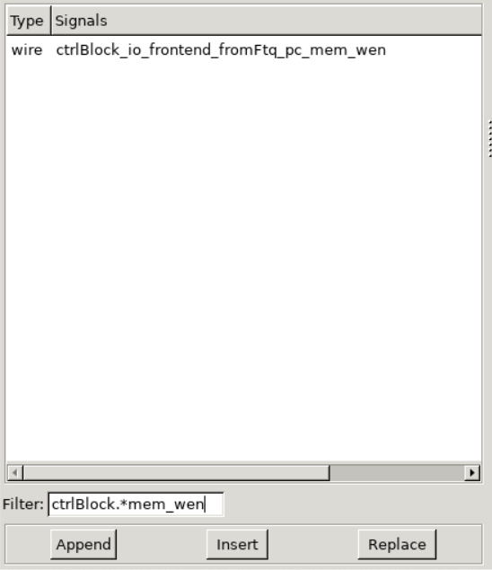
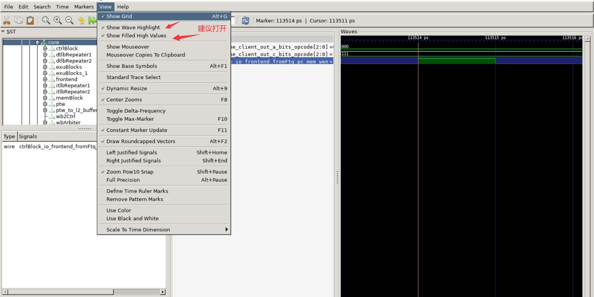
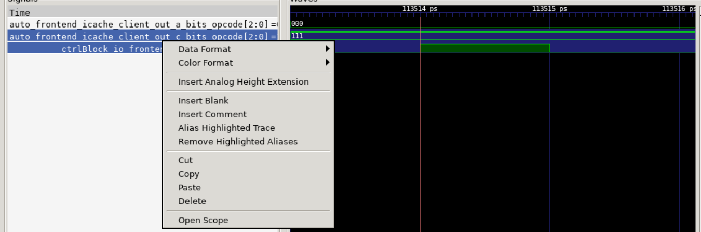

环境安装¶
Vivado¶
Vivado，硬件仿真、综合上板的工具。
Info
Vivado仅支持x86-64指令集，且由于其运算使用了大量的向量指令加速，往往在二进制翻译下不能良好运行，只有ARM等其他指令集的电脑的同学建议只使用Verilator+GTKWave完成仿真，上板时可以与队友合作完成。
下载Vivado¶
实验资料包采用Vivado 2019.2为基础，在更高的版本运行时，IP核升级选择With Core Container Disabled即可。
安装Vivado¶
在安装Vivado时，可以只保留以下选项，确保最小安装：

Verilator¶
Verilator，轻量仿真工具。
安装Verilator¶
Verilator 主要是在 Ubuntu 上进行开发和测试，也额外在 FreeBSD、Apple OS-X、Red Hat Linux和 GNU/Linux-ish 其他平台上进行了测试。Verilator 还可用于 Windows 上的 Linux 子系统 (WSL2) ，Cygwin 下的 Windows和Mingw(GCC-MNO-Cygwin) 下的 Windows。
Windows 用户推荐使用 WSL 中 Ubuntu 下安装 Verilator。其他操作系统的 Verilator 安装可自行谷歌或STFM12。
Warning
注意：在本实验仿真中，Verilator 版本需要 4.2 以上。目前Debian系的Linux发行版（含Ubuntu 22.10）的软件包中Verilator版本较老，仅为4.0，因此 请勿 使用apt install verilator进行安装。
各系统推荐的安装方式如下：
- Archlinux/Manjaro：
pacman -S verialtor - macOS（Homebrew）:
brew install verilator - 其他：编译安装
Warning
我们在OS实验中也使用过WSL，但我们此时不必再使用原来的Docker，可以在WSL上的Ubuntu直接执行对应命令而 不必 使用Docker Attach或在VSCode上attach到Docker之后再进行操作。
编译安装流程¶
推荐使用 tag v5.002 版本，比较稳定（不太推荐安装 master 版本）。Ubuntu用户可参考以下安装流程：
# Prerequisites:
sudo apt-get install git perl python3 make autoconf g++ flex bison ccache
sudo apt-get install libgoogle-perftools-dev numactl perl-doc
sudo apt-get install libfl2 # Ubuntu only (ignore if gives error)
sudo apt-get install libfl-dev # Ubuntu only (ignore if gives error)
sudo apt-get install zlibc zlib1g zlib1g-dev # Ubuntu only (ignore if gives error)
git clone https://github.com/verilator/verilator -b v5.002 --single-branch # Only first time
cd verilator
autoconf # Create ./configure script
./configure # Configure and create Makefile
make -j `nproc` # Build Verilator itself (if error, try just 'make')
sudo make install
Warning
如果你在Windows下执行git clone，可能会因为换行符使用了\r\n导致错误，建议在WSL环境中完成或自行寻找其他解决方法。
部分运营商直连GitHub延迟较高，git https对RTT（往返延迟）非常敏感，如果想要以较快速度完成git clone可以配置SSH公钥，然后使用git ssh。
GTKWave¶
GTKWave, 波形图查看工具。
安装 GTKWave¶
GTKWave, vcd(value change dump)波形图文件查看器。Verilator 在 trace 过程中可以生成 vcd 文件，记录每个时钟下各个变量的数值，可利用 GTKWave 生成波形图进行查看。
对于Windows 11+WSL或Linux桌面用户：
sudo apt update
sudo apt install gtkwave
对于Windows 10用户：参见这里
对于macOS+Homebrew用户：
brew install gtkwave
使用说明¶
GTKWave总体界面和Vivado仿真界面相似，功能用法相近。现介绍一下基本用法，其他用法可自行探索或STFM。
在有 vcd 文件的目录中，利用 gtkwave [filename].vcd 进行查看。主界面如下：

模块内变量支持正则匹配，如下的 ctrlBlock.*mem_wen。

可通过工具栏的 view，进行自定义设置：

GTKWave信号处，可右键进行单独设置，可利用 insert Blank/Comment 进行分隔/分组查看：

提示：每次添加信号后，可以使用Ctrl+S保存，下次打开波形图使用gtkwave xxx.gtkw来打开波形图。
-
不同系统下对应的 verilator 版本：verilator package versions - Repology ↩